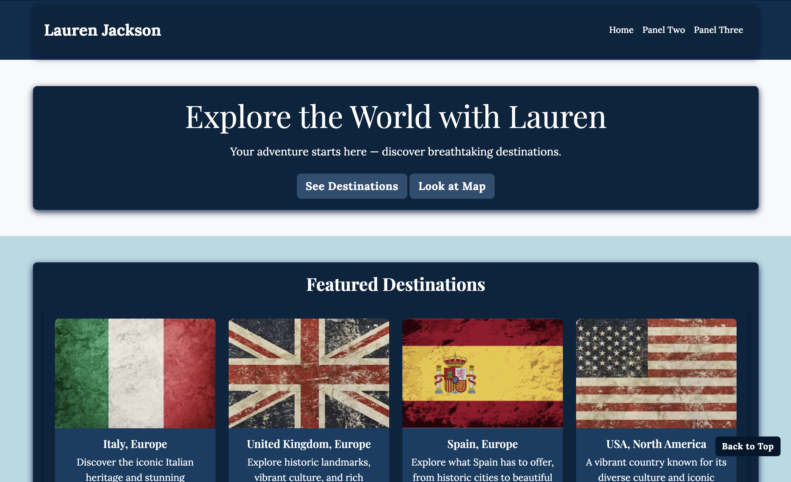
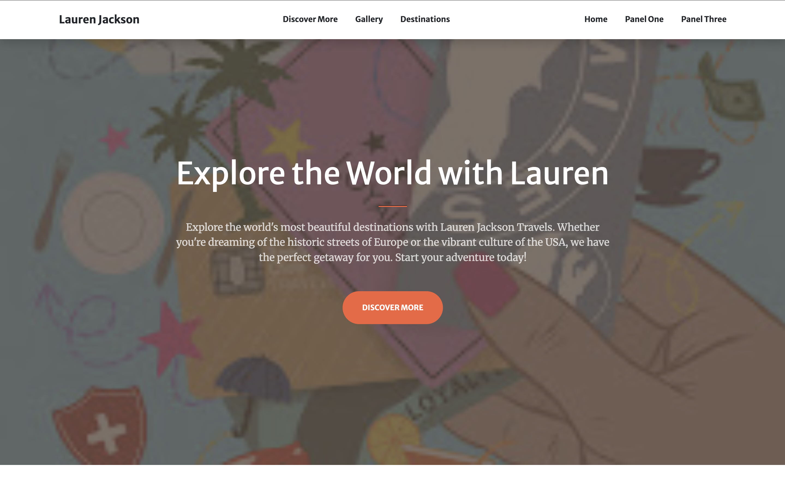
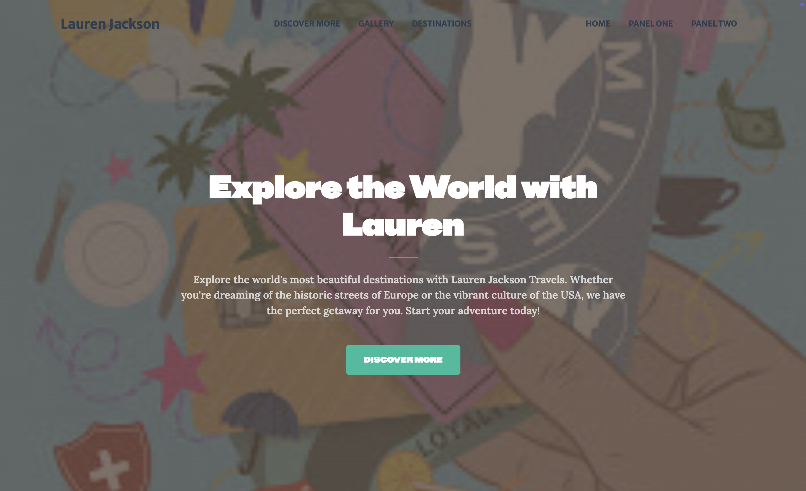

Project Two: Bootstrap Reflection

Panel One was challenging to come up with the concept of how you want to present the content. I knew I wanted to use my travel experience in this webpage. Going on bootstrap and getting the main structure was helpful. Adding on to the main structre to make it to my desired look. The most challenging part I had was adding the map to the page. I had to look on google for another way to do it.Once I firgured out how everything eles was fine. This panel allowed me to be create and use a new concept that I have never did before.

Panel two was difficult to complete due to some layout challenges. Using a Bootstrap I liked I was able to complete it using information from panel one. The most challenging part was styling because you can't the css stylesheet. Using html and the provide stylesheet I was able to make minor changes that I like to fit the concept of the page using bootstrap.Overall I havd learned alot from the experience.

Panel Three was the easiest to create. I used a template from Start Bootstrap and customized it to fit my style.The process was smooth and I learned a lot about using pre-built components and modifying them. This panel helped me understand how to work with existing code and make it my own.